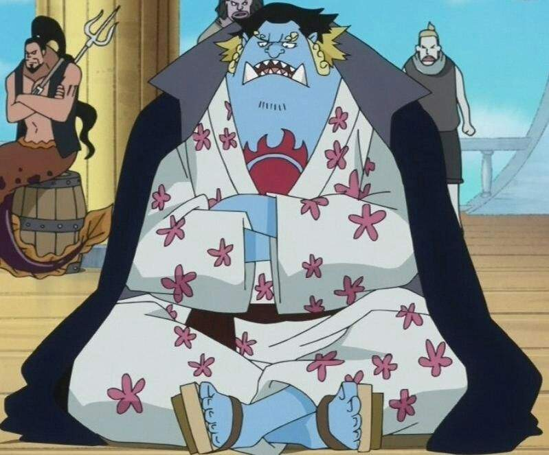
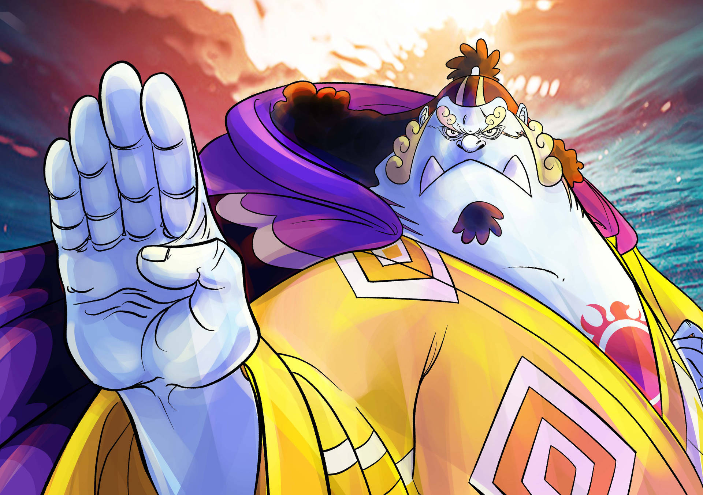
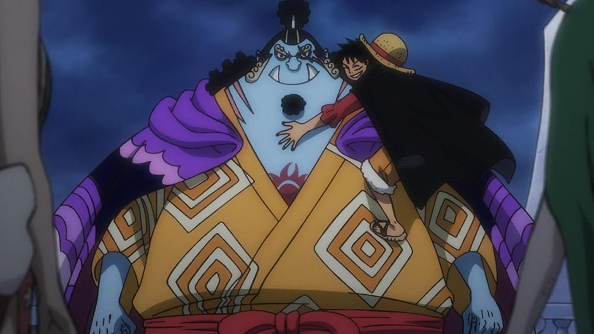

Etapas de Jinbe en One Piecce
🔹 Fase 1 — Orígenes: Gyojin, Pirata del Sol y posición como Warlord

- Jinbe es un gyojin — tiburón-ballena — que formó parte de los Sun Pirates, originalmente bajo el liderazgo de Fisher Tiger. Tras la muerte de su capitán, él asume como su sucesor.
- Más adelante acepta convertirse en uno de los Shichibukai (“Señores de la Guerra del Mar”), una alianza con el gobierno, con el fin — en su interpretación — de proteger a los gyojins y mejorar la convivencia entre razas.
- Su pasado lo marca: conoce de esclavitud, injusticias hacia su raza, lo que moldea su filosofía de honor, respeto y justicia.
🔹 Fase 2 — Conmociones: prisión, guerra y decisión de honor

- En el arco Impel Down Arc, Jinbe aparece como prisionero — había rehusado tomar partido en una guerra que iba a enfrentar a humanos y gyojins, lo que lo lleva a prisión.
- Posteriormente, se alía con Monkey D. Luffy para ayudarlo a escapar y salvar a su hermano — demostrando su sentido de honor y lealtad incluso en circunstancias adversas.
- Tras estos eventos, decide renunciar a su cargo como Shichibukai, rechazando colaborar con un sistema que considera corrupto.
🔹 Fase 3 — Aliado, protector y mentor: Fish-Man Island y respaldo a los Sombrero de Paja

- Durante el arco Fish-Man Island Arc, Jinbe ayuda a su antigua raza, defiende la isla y su gente; también colabora con los protagonistas, consolidando su papel como aliado.
- En ese arco, recibe la invitación de Luffy para formar parte de su tripulación (Straw Hat Pirates). Aunque reconoce la invitación y respeta a Luffy, Jinbe decide no unirse inmediatamente: aún tiene asuntos pendientes, sobre todo con su pasado y compromisos como ex-Pirata del Sol.
- Su papel: protector de su gente, mediador entre humanos y gyojins, y puente de entendimiento — su visión de paz y respeto mutuo toma protagonismo.
🔹 Fase 4 — Decisión definitiva: romper viejos vínculos y unirse a la causa

- Tras los eventos del arco Whole Cake Island Arc, donde ayuda a escapar a los Straw Hat Pirates y enfrenta peligros enormes por ello, Jinbe renuncia definitivamente a los lazos que lo ataban a antiguos grupos/poderes.
- Luego, durante el arco Wano Country Arc, decide incorporarse oficialmente a los Straw Hat Pirates: se convierte en su timonel y miembro pleno.
- Su rol: además de aportar con su fuerza y habilidades (es experto en combate acuático, artes marciales gyojin), trae experiencia, liderazgo, un ideal de armonía entre razas y un enfoque humano/moral al grupo.